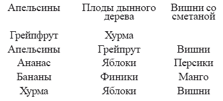
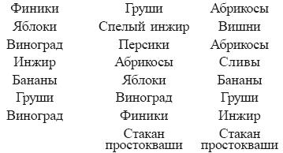

Потребление и переваривание белков

Белковая пища – это та пища, которая содержит высокий процент протеина. Наиболее богаты протеином:
– Орехи, в том числесемечки подсолнуха, тыквы, дыни, арбузаи т. п.
– Всехлебные злаки
– Зрелые бобы
– Соевые бобы
– Всепостные мясные продукты, в том числе рыба, яйца
– Сыр
– Маслины
– Авокадо
– Молоко
К сожалению, обычная практика потребления пищи состоит в том, что нам предлагают съесть несопоставимые продукты, например, хлеб с мясом, кашу с сахаром, пирог с фруктами и т. п. Таким образом, мы едим сначала белки, а потом углеводы, и вся эта пища поступает в желудок самым беспорядочным образом. Есть эти два типа пищи не рекомендуется по той причине, что первая стадия переваривания крахмала требует щелочной среды, а первая стадия переваривания белка – кислой. Переваривание белков начинается в желудке. Ответственны за это ферент пепсин и соляная кислота. Для норального переваривания среда желудка должна быть резко кислой. Если, например, потребляют продукты, богатые белком (к ним относятся мясо и рыба) вместе с продуктами, богатыми углеводами (например, картофелем), в этом случае переваривание не может проходить оптимально, так как ференты амилаза и пепсин противодействуют друг другу, поскольку им нужна различная среда: амилазе – слабощелочная, пепсину – резко кислая. Следовательно, для организма чрезмерно затруднена работа по перевариванию, к тому же непереваренный крахмал абсорбирует энзим – пепсин, а без него затрудняется переваривание белков.
Неразумно потребление и более одного вида белков, так как это ведет к перенасыщению белками, а тенденцию к увеличению потребления белков можно считать вредной. Два белка, различных по своему составу, требуют выделения желудочного сока в разные временные строки. Секреция желудочного сока не только начинается в различное время, но также зависит от их, белков, количественного состава. Академик И.Павлов даже выделял специфические секреции, называя их по видам пищи: «молочный» сок, «хлебный» сок и т. д. Характер съеденной пищи влияет не только на соковыделение, но и на состав кислотности. Так, при употреблении мяса кислотность наивысшая, а при потреблении хлеба – наименьшая. В это время происходит регулирование сока. Самый сильнодействующий сок выделяется в первый час переваривания мяса, при переваривании хлеба – в третий час, а при переваривании молока – в последний час. При этом время переваривания зависит от количества пищи. Нужно помнить простую истину: чем проще блюдо, тем быстрее оно переваривается. Разновременность в выработке желудочных секреций дает основание говорить, что такие, например, виды пищи, как хлеб и мясо не должны употребляться за один прием. Еще И.Павлов указывал, что на хлеб и молоко расходуется разное количество желудочного сока, несмотря на равное количество в них белков. То же самое происходит с энзимом, когда одновременно потребляют мясо и молоко. Пепсина для усвоения азота мяса требуется больше, нежели для молока. Эти различные по составу белков виды пищи получают энзим в тех количествах, которые соответствуют его усвояемости. Мясо требует большего количества желудочного сока по сравнению с молоком. Вследствие замедленного действия кислот, сахаров и жиров на процесс пищеварения продуктов, содержащих эти элементы, их нельзя есть вместе с белками. Жир, которым полны сливочное масло, сливки, растительное масло, маргарин и т. п., замедляет переваривание белка, поэтому употребление последнего с жиром нецелесообразно.
Наибольшее количество жира находим в жирных сортах мяса, в жареных яйцах и мясе, в молоке, орехах и т. д. Эти продукты требуют более продолжительного переваривания, чем постное жаркое, яйца всмятку или в мешочек. Жир нейтрализуется большим количеством зеленых овощей, особенно сырой капустой. С сыром, орехами лучше есть зеленые овощи, а не кислые фрукты, хотя кому-то возможно это и покажется невкусным. Сахар также мешает перевариванию белков. Он сам не переваривается ни в желудке, ни во рту, а задерживается в желудке и бродит. Поэтому нельзя есть белки с продуктами, содержащими сахар. Например, сливки с сахаром после еды задерживают пищеварение на несколько часов. Кислоты тоже создают проблемы при переваривании белковой пищи. Исключение составляют сыр, орехи и авокадо; на переваривание этих продуктов кислоты не оказывают заметного влияния. С белками всех видов лучше всего сочетаются некрахмалистые продукты и сочные овощи: шпинат, мангольд (свекла листовая), огородная капуста; ботва – свеклы, горчицы, репы; китайская капуста, брокколи, кочанная капуста, брюссельская капуста, листовая капуста, спаржа, свежие зеленые бобы, икра, все свежие нежные сорта кабачков и тыквы, сельдерей, огурцы, редис, водяной кресс, петрушка, цикорий, одуванчик, рапс, эскариоль (салат), побеги бамбука. С белками хорошо сочетаются следующие овощи: свекла, репа, тыква, морковь, козлобородник, цветная капуста, кольраби, брюква, бобы, горох, артишоки, картофель, включая сладкий. В них содержится крахмал, и поэтому они прекрасно дополняют крахмальную пищу. В бобах и горохе содержится белок и крахмал. Их хорошо есть в сочетании с теми овощами, в которых нет других белков или других крахмалов.
Рекомендуем вам меню завтрака, которое содержит правильные сочетания фруктов. Только не добавляйте к фруктам сахар.


Некоторые врачи утверждают, что фрукты угнетают пищеварение. Отвечая, что употребление фруктов с различной едой приводит к расстройствам организма, они обвиняют в этом фрукты. Однако, съеденные отдельно от другого приема пищи, они не доставляют никаких неприятностей.
Фрукты приносят не только эстетическое удовольствие, ведь ими не устаешь любоваться. Это и самый вкусный продукт, в котором содержатся смеси чистых, питательных, полезных пищевых элементов. Весте с орехами (тоже фрукты) они представляют идеальную пищу для человека. А если к ним добавить зеленые овощи, то лучшего сочетания продуктов не найти. Правда, для лучшего усвоения фруктов необходимо соблюдать одно условие – не сочетать их с крахмалами и белками. Авокадо и маслины особенно плохо усваиваются с белками; от этого могут возникать пищевые расстройства. Таким образом, не следует есть фрукты с мясом, яйцами, хлебом и т. п. Фрукты почти не перевариваются во рту, а сразу отправляются в кишечник, но зато там они свою задачу исполняют вполне исправно. Если же их есть с другой пищей, то они не смогут перевариваться до тех пор, пока не наступит черед этих других продуктов. В итоге они не перевариваются, а разлагаются под воздействием трудно-перевариваемых смесей. Фрукты нельзя есть также между приемами пищи, так как желудок в это время занят перевариванием иной, до того принятой пищи. Привычка между едой пить какой-либо фруктовый сок также не одобряется, так как это часто является причиной несварения желудка. На завтрак можно приготовить вкусный салат с белками. Его состав: грейпфрут, апельсин, яблоко, ананас, салат-латук, сельдерей, 120 г творога или орехов или большое количество авокадо. Другой рецепт салата: персики, сливы, абрикосы, вишня, гладкий персик, салат-латук, сельдерей. Но, если вы намерены добавить в салат белок, не стоит класть в него сладкие фрукты: бананы, изюм, чернослив и др.
Следующее меню основано на правильном сочетании крахмалистых соединений и предназначено для употребления в дневное и вечернее время. Необходимым условием для него является включение овощных салатов. На ужин мы советуем потреблять больше салата с белками, а в обед – тот же салат, но с меньшим количеством крахмала. Эти сочетания можно есть в достаточном количестве, но только с учетом индивидуального подхода к каждому человеку.
Меню на обед
Овощной салат, ботва репы, тыква, каштаны.
Овощной салат, шпинат, стручковые бобы, кокосовый орех.
Шпинат, красная капуста, вареные корнеплоды.
Стручковые бобы, тертая брюква, ирландский картофель.
Шпинат, свекла, картофель.
Свекла, морковь, картофель.
Свекла, морковь, картофель.
Свекольная ботва, окра, рис.
Ботва репы, спаржа, рис.
Кольраби, свежая кукуруза, рис.
Свекольная ботва, цветная капуста, тушеный кабачок.
Ботва репы, окра, артишоки.
Кудрявая капуста, окра, артишоки.
Свекла, тыква, артишоки.
Свекольная ботва, тыква, картофель.
Свекла, окра, рис.
Шпинат, стручковые бобы, арахис.
Окра, цветная капуста, морковь.
Капуста, стручковые бобы, тушеные кабачки.
Кудрявая капуста, стручковые бобы, репа.
Зеленый кабачок, окра, тушеный кабачок.
Ботва репы, брокколи, арахис.
Окра, свекольная ботва, хлеб из цельного зерна.
Стручковые бобы, брокколи, тыква.
Капуста, окра, рис.
Спаржа, белый кабачок, батат.
Свекольная ботва, цветная капуста, сладкий картофель.
Спаржа, окра, арахис.
Швейцарская свекла, горох, тыква.
Желтые бобы, кудрявая капуста, картофель.
Шпинат, зеленые стручковые бобы, рис.
Свекла, спаржа, тушеные бобы.
Свекла, тыква, тушеные корнеплоды.
Окра, свекольная ботва, сваренные на пару корнеплоды.
Тыква, свекла, картофель.
Шпинат, репа, артишоки.
Окра, стручковые бобы, артишоки.
Окра, брюссельская капуста, картофель.
Свекла, стручковые бобы, арахис.
Шпинат, капуста, тушеная тыква.
Стручковые бобы, тыква, картофель.
Стручковые бобы, капуста, сладкий картофель.
Свекла, брокколи, батат.
Шпинат, капуста, каштаны.
Меню на ужин Зеленый кабачок, шпинат, орехи.
Мангольд, спаржа, орехи.
Спаржа, желтая тыква, орехи.
Окра, шпинат, орехи.
Мангольд (свекла), тыква, орехи.
Мангольд, окра, творог.
Окра, желтая тыква, авокадо.
Свекольная ботва, стручковые бобы, авокадо.
Желтая тыква, кочанная капуста, семечки подсолнечника.
Шпинат, брокколи, семечки подсолнечника.
Свекольная ботва, окра, сеечки подсолнечника.
Мангольд, тыква, авокадо.
Шпинат, зеленый кабачок, творог.
Свекольная ботва, зеленый горошек, творог.
Тыква, брокколи, творог
Шпинат, кочанная капуста, необработанный сыр (не плавленый).
Тушеные баклажаны, мангольд, яйца.
Шпинат, тыква, яйца.
Ботва репы, стручковые бобы, яйца.
Белая капуста, шпинат, орехи.
Брокколи, зеленые бобы, орехи.
Окра, красная капуста, авокадо.
Спаржа, артишоки, авокадо.
Тыква, мангольд, авокадо.
Кудрявая капуста, стручковые бобы, семечки подсолнечника.
Тушеные баклажаны, мангольд, соевые побеги.
Мангольд, тыква, баранья отбивная.
Зеленый кабачок, кудрявая капуста, необработанный сыр.
Спаржа, зеленые бобы, грецкие орехи.
Окра, свекольная ботва, семечки подсолнечника.
Сваренный на пару лук, швейцарская свекла, необработанный сыр.
Зеленый кабачок, ботва репы, ростбиф.
Красная капуста, шпинат, творог.
Спаржа, зеленые бобы, грецкие орехи.
Окра, свекольная ботва, семечки подсолнечника.
Спаржа, брокколи, яйца.
Тушеные баклажжаны, кудрявая капуста, авокадо.
Тыква, горчичная ботва, пекан (орехи).
Стручковые бобы, окра, жареная баранина.
Брюссельская капуста, кудрявая капуста, орехи.
Предлагаем следующую схему питания на неделю. Она послужит вам основой для собственного составления соответствующего меню. К ней нужно подходить творчески, сообразуясь со своими вкусами и возможностями.
Весенне-летнее меню
Воскресенье
1-й завтрак Арбуз, вишня, абрикосы.
2-й завтрак Овощной салат, мангольд, тыква, картофель.
Обед Овощной салат, стручковые бобы, окра, орехи.
Понедельник
1-й завтрак Персики, вишни, абрикосы.
2-й завтрак Овощной салат, свекольная ботва, морковь, тушеные бобы.
Обед Овощной салат, шпинат, капуста, творог.
Вторник
1-й завтрак Канталупа (дыня).
2-й завтрак Овощной салат, окра, кабачки, артишоки.
Обед Овощной салат, брокколи, свежая кукуруза, авокадо.
Среда
1-й завтрак Ягоды со сливками (без сахара).
2-й завтрак Овощной салат, цветная капуста, окра, рис.
Обед Овощной салат, кабачки, ботва репы, баранья отбивная.
Четверг
1-й завтрак Персики, абрикосы, сливы.
2-й завтрак Овощной салат, зелёная капуста, морковь, сладкий картофель.
Обед Овощной салат, свекольная ботва, стручковые бобы, орехи.
Пятница
1-й завтрак Водяная дыня.
2-й завтрак Овощной салат, тушеные баклажаны, мангольд, хлеб из цельной пшеницы.
Обед Овощной салат, тыква, шпинат, яйца.
Суббота
1-й завтрак Бананы, вишни, стакан простокваши.
2-й завтрак Овощной салат, зелёные бобы, окра, картофель.
Обед Овощной салат, капуста, брокколи, соевые побеги.
Осенне-зимнее меню
Воскресенье
1-й завтрак Виноград, бананы, финики.
2-й завтрак Овощной салат, китайская капуста, спаржа, тушеные корнеплоды.
Обед Овощной салат, шпинат, тыква, тушеные бобы.
Понедельник
1-й завтрак Хурма, груша, виноград.
2-й завтрак Овощной салат, капуста, цветная капуста, батат.
Обед Овощной салат, брюссельская капуста, стручковые бобы, пекан (орехи).
Вторник
1-й завтрак Яблоки, виноград, сушеный инжир.
2-й завтрак Овощной салат, ботва репы, окра, рис.
Обед Овощной салат, капуста, тыква, авокадо.
Среда
1-й завтрак Груши, хурма, бананы, стакан простокваши.
2-й завтрак Овощной салат, брокколи, стручковые бобы, картофель.
Обед Овощной салат, окра, шпинат, пиньоль.
Четверг
1-й завтрак Плоды дынного дерева, апельсин.
2-й завтрак Овощной салат, кабачки, пастернак, хлеб из цельного зерна.
Обед Овощной салат, красная капуста, стручковые бобы, семечки подсолнечника.
Пятница
1-й завтрак Хурма, виноград, финики.
2-й завтрак Овощной салат, морковь, шпинат, сваренные на пару корнеплоды.
Обед Овощной салат, мангольд, тыква, сыр (не плавленый).
Суббота
1-й завтрак Грейпфрут.
2-й завтрак Овощной салат, свежий горох, капуста, кокосовый орех.
Обед Овощной салат, шпинат, сваренный на пару лук, баранья отбивная.
Воскресенье
1-й завтрак Дыня
2-й завтрак Овощной салат, стручковые бобы, овощной суп, батат.
Обед Овощной салат, тушеные баклажаны, капуста, яйца.